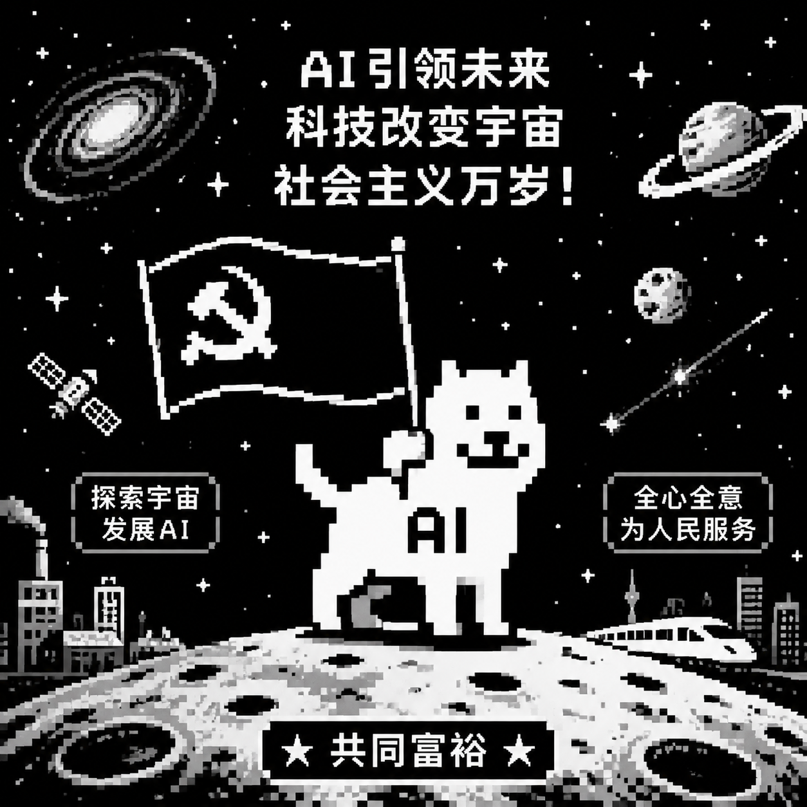

$ whoami
Easin|
不再是单纯的代码编写者，而是与 AI 协同进化的应用架构师。

$ cat noko.png |
$
数据成就
33篇
知识库文章
27年
财富在线历程
2款
核心产品
∞
学习热情
$
技术栈
Kotlin
Android
Jetpack Compose
Gradle
Hilt
Coroutines
Room
Git
$
项目作品
$
时间线
2026.07
关键词星球 & 财经黄页上线
知识库新增 3D 关键词星球、25 个财经网站导航、玄学板块。
2026.07
股宇宙知识库发布
股票基础教学百科上线，覆盖 K线、均线、指标、基本面、港美股等模块。
2026.07
财富在线 27 周年庆
制作周年庆专题页面，记录公司 27 年发展历程。
2026
股宇宙 APP 持续迭代
Android 端基于 Kotlin + Compose 构建，持续优化用户体验。
1999
财富在线启航
专业 · 进取 · 务实，27 年深耕金融信息服务。
$